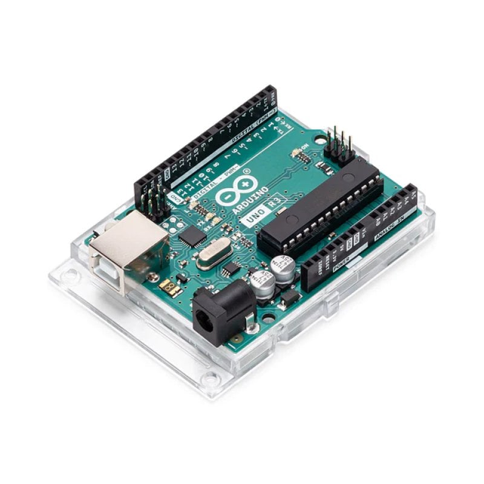

L'Incontro tra Due Mondi
Per il mio Capolavoro ho scelto di raccontare un'esperienza che ha segnato il mio percorso: il PCTO dedicato ad Arduino. Non è stata la solita lezione frontale, ma un ponte gettato tra il nostro liceo e l'Istituto Industriale.
Il progetto ha coinvolto parte della nostra classe del Liceo Scientifico "Galilei Vetrone" e una classe quinta dell'Istituto Industriale. La particolarità dell'esperienza è stata proprio il confronto diretto: non abbiamo collaborato, ma ci siamo sfidati in una vera e propria competizione tra scuole.
Per noi del liceo è stata una sfida stimolante. Abbiamo dovuto fare affidamento sulla nostra forma mentis logica e teorica per colmare il divario con la loro esperienza pratica, dimostrando che l'approccio scientifico può fare la differenza anche sul campo.

Logica
Tradurre il pensiero in istruzioni precise attraverso il codice C++.
Materia
Manipolare componenti reali, dai LED ai sensori di luce.
Squadra
Vincere insieme, integrando competenze teoriche e pratiche.